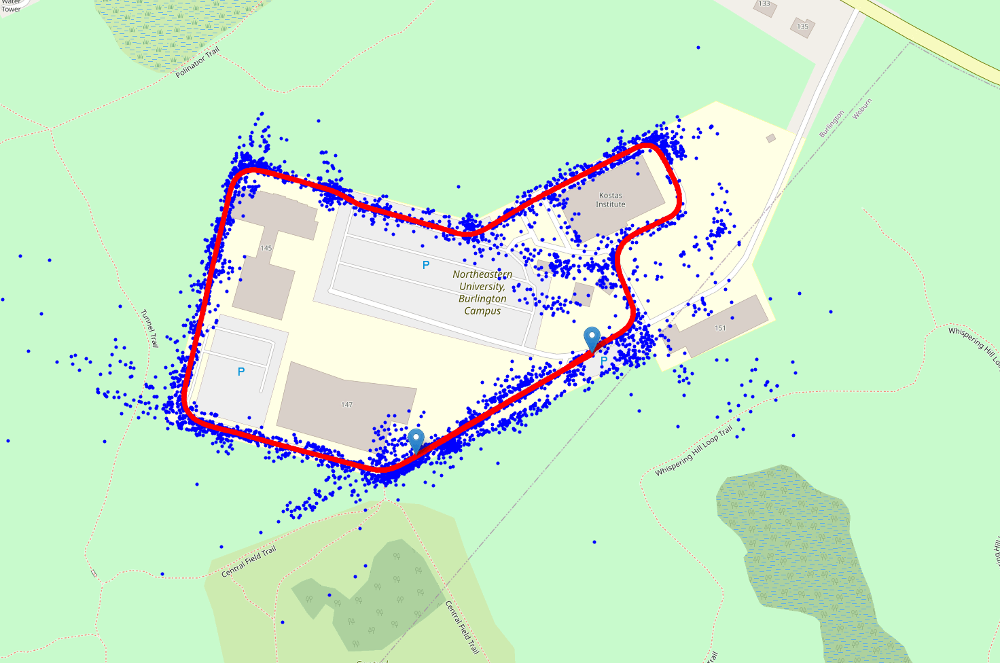
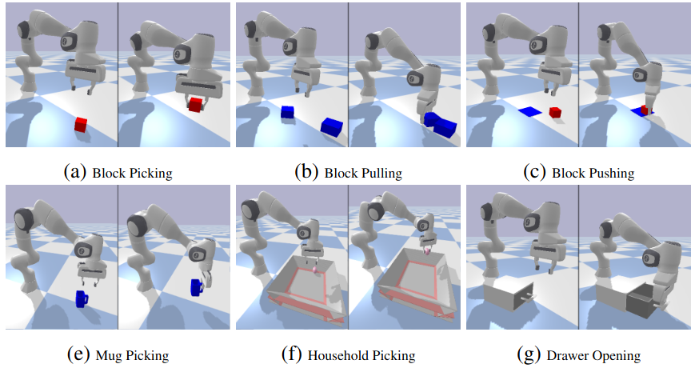
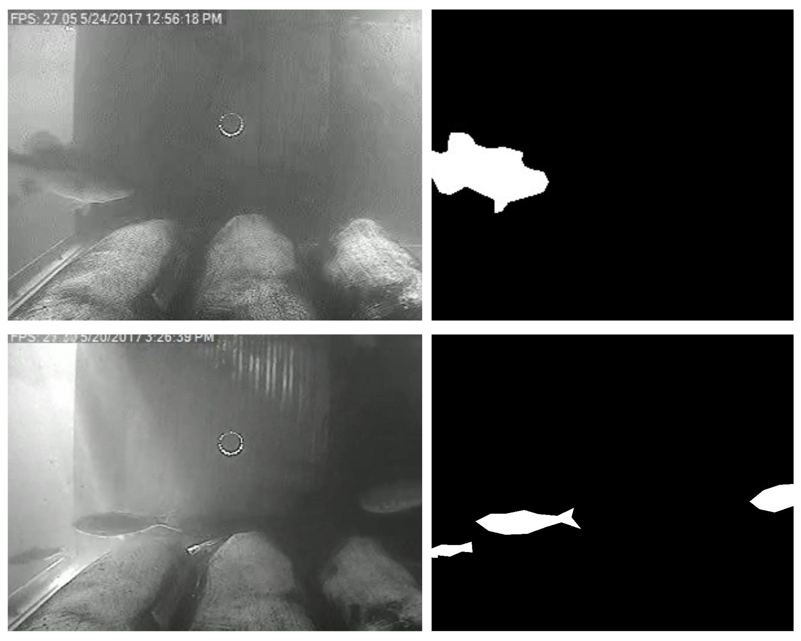
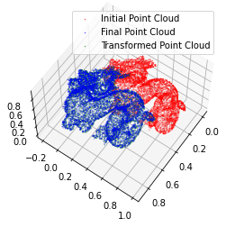

I am a Master's student in Robotics at Northeastern University. I am excited about solving challenging problems in Robot Perception especially for robust autonomy.
I am a Computer Vision researcher at the Robust Autonomy Lab
advised by Prof. David Rosen.
As a part of the lab, we are developing a multi-camera GPS-Visual-Inertial SLAM system. I am actively involved in the loop closure, IMU initialization, reinitialization and landmark pruning
modules in the codebase. I also had the opportunity to set up the sensor system in our University's autonomous car and perform non-overlapping camera calibration.
Before delving into the field of SLAM, I was a research assistant at the Helping Hands Lab, working on symmetric models for Visual-Force Policy Learning to perform Dextrous Manipulation
under the guidance of Dr. Robert Platt. I also completed a 6-month
internship last year at the Insititute for Experiential Robotics working on real-time segmentation of fish species on a challenging underwater dataset.
Previously, I graduated with a B.E. in Electrical and Electronics Engineering from the National Institute of Technology, Trichy (2022).
Before joining Northeastern, I conducted research in RL-based path planning for multiple ground vehicles at the Robotics Research Centre in the International Institute of Information Technology, Hyderabad
and on Multiple Pedestrian Tracking at Indian Institute of Space Science and Technology, Trivandrum.

Multi-Camera GPS-Visual-Inertial SLAM
In collaboration with Toyota Research Institute (TRI)
Video
In this work, we've developed a non-linear optimization based system that tightly integrates GPS data,
inertial measurments and visual input from a multi camera setup.
We utilize IMU preintegration to summarize hundreds of inertial measurements into a single relative motion constraint.
For achieving precise global localization, we estimate the transformation between the Visual-Inertial Navigation (VINS) frame
and the GPS's ENU frame online while accounting for the time offset between the sensors.
A loop closure module, which utilizes visual place recognition was developed to detect and close loops in the trajectory, followed by a pose graph optimization.

Symmetric Models for Visual Force Policy Learning
Accepted to IEEE International Conference on Robotics and Automation (Sep, 2024)
In this work, we present a a novel method for robotic control which leverages visual and force feedback using concepts from Geometric Deep Learning and Policy Learning.
This work demonstrates the utility of learning force feedback control policies in both general manipulation tasks and scenarios with low visual acuity, especially when we have side view images.
We have also performed real world robot experiments to show the effectiveness of our method and can outperform state of the art methods like Visuo-Tactile Transformers (VTT) and Product of experts (POE).

Real-Time Background-Agnostic Fish Localization in Underwater Videos
Accepted to IEEE Oceanic Engineering Society (April, 2024)
This work developed a real-time, background-agnostic underwater fish localization framework by combining three algorithms using ensemble learning.
The baseline algorithm performed background subtraction in real-time, and its output was fine-tuned with semantic segmentation and optical flow.
The devloped algorithm worked in real-time and accomplished localization with good accuracy.
Results generated by our framework are useful for fish species identification and counting, which in turn are the prerequisites for autonomous ecosystem monitoring and understanding of long-term fish behavior.
Additionally, I integrated a sensor setup consisting of an underwater HD camera and a hydrophone for data collection to test the performance of our algorithm.

Learning Inverse Kinematics using Reinforcement Learning
In this project, we present a Reinforcement Learning (RL)
approach to the problem of Inverse Kinematics (IK), which
involves controlling the end-effector of a 7 Degrees-of-
Freedom (DoF) robotic arm to enable it to reach a target
position. Our approach uses a deep learning based policy gradient approach.
We investigated and compared the performance of three major algorithms namely:
Deep Deterministic Policy Gradient (DDPG), Stochastic Actor Critic (SAC) and Twin Delayed Deep Deterministic Policy Gradient (TD3)
in this research. In addition, we see
the effect of different reward structures in learning the
optimal policy for our chosen domain. We demonstrate the
performance of the algorithms in simulation using pybullet.

Reconnaissance with Turtlebot
In this project, we designed a complete autonomous system to perform reconnaissance in a simulated disaster environment.
Specifically, when introduced into a closed but initially unknown environment, our system would generate a complete map of the environment and locate any victims present in the environment.
We represent the environment using an occupancy grid map, and use AprilTags as stand-ins for simulated victims.
The default exploration of the robot, ensures the environment is explored completely w.r.t the LIDAR, but the camera almost certainly wouldn't have seen everything LIDAR has seen.
Our approach, explores the environment with an auxiliary map, which is is generated by only those LIDAR points that were seen by the camera as well creating a camera based frontier exploration.
To find which points in the LIDAR were seen by the camera, we transform the Lidar points to the Camera frame with the help of autonomous robust Extrinsic Calibration.

Scan Matching using Iterative Closest Point
In this project, I have implemented the Iterative Closest Point (ICP) algorithm, and used it to estimate the rigid transformation that optimally aligns two 3D pointclouds.
The given two pointclouds X , Y ⊂ Rd have an initial guess ( t0, R0 ) ∈ SE ( d ) for the optimal rigid registration y = R x + t aligning X to Y.
The Red dragon indicates the intial Point Cloud and the Green Dragon indicates the transformed Point Cloud after the ICP algorithm is applied and we see its convergence with the blue dragon which is the final Point Cloud.
{kind=link}
{kind=link}
{kind=link}
{kind=link}